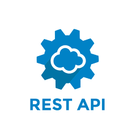

Projets du parcours développeur web OpenClassrooms
Formation en ligne axée sur la pratique.
J'ai réalisé ces projets sous forme de cas pratiques,
en mobilisant apprentissage théorique en autonomie et application concrète.
Description de la formation
Animations CSS
Septembre 2020
Contexte :
réaliser le prototype HTML/CSS de maquettes graphiques pour un site de réservation de menu en ligne (2 pages)
Actions :
- Découpage et intégration de maquette
- Utilisation des media queries pour l'adaptation à tous les devices
- Animations et transitions CSS3
- Optimisation du CSS avec SASS
Optimisations d'un site existant
Septembre 2020
Contexte :
À partir du code-source du site initial, optimiser un site existant en termes de SEO et d'accessibilité en respectant le contexte technique d'origine et les bonnes pratiques de développement web (W3C, WCAG).
Actions :
- Réalisation d'un analyse à partir des outils d'audit de site web (Lighthouse, GTmetrix, Wave) et des bonnes pratiques de développement
- Élaboration d'un plan d'action d'optimisations
- Implémentation d'optimisations SEO et d'accessibilité dans le code
- Rédaction d'un rapport d'optimisation documenté
Réalisation d'un site e-commerce
Octobre 2020
Contexte :
réalisation d'un petit site e-commerce en JavaScript.
Actions :
- Récupération et affichage des informations produits via une API REST
- Gestion du panier d'achat dans le local storage
- Validation des données dans le formulaire de validation de commande
Création d'une API REST

Décembre 2020
Contexte :
à partir du front d'une application web de notation du goût de sauces piquantes, création de l'API REST côté serveur avec Node + Express pour traiter les requêtes fetch et la base de donnée MongoDB du projet.
Actions :
- Création d'un serveur Node.js avec Express
- Implémentation des routes CRUD
- Stockage des données dans MongoDB Atlas (solution cloud)
- Mise en pratique des bonnes pratiques de sécurité (recommandations OWASP)
Création d'un réseau social d'entreprise
Janvier 2021
Contexte :
construction from scratch d'une application de type 9GAG avec comme fonctionnalités : créer et gérer son compte utilisateur, poster des articles et des medias, et consulter les publications des autres utilisateurs dans un fil d'actualité.
Actions :
- Création du frontend de l'application avec le framework VueJS
- Création de l'API avec Node.js + Express
- Stockage des données avec MySQL
- Gestion des sessions utilisateurs avec Json Web Token